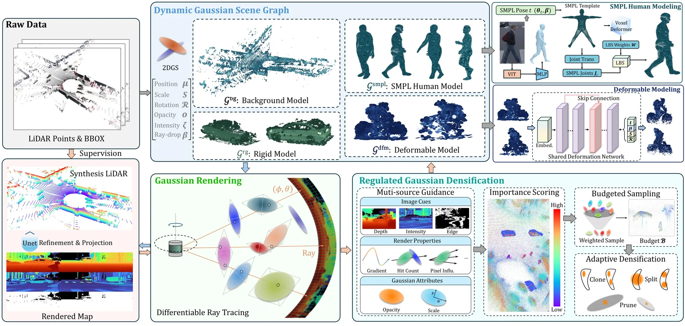
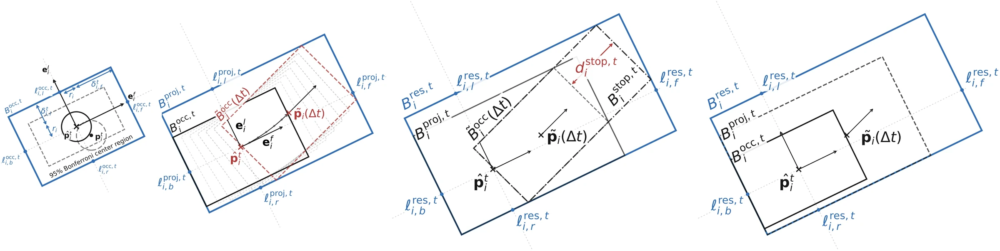
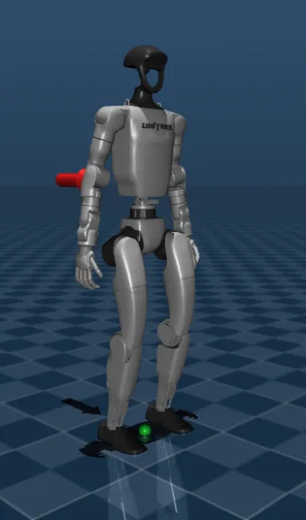
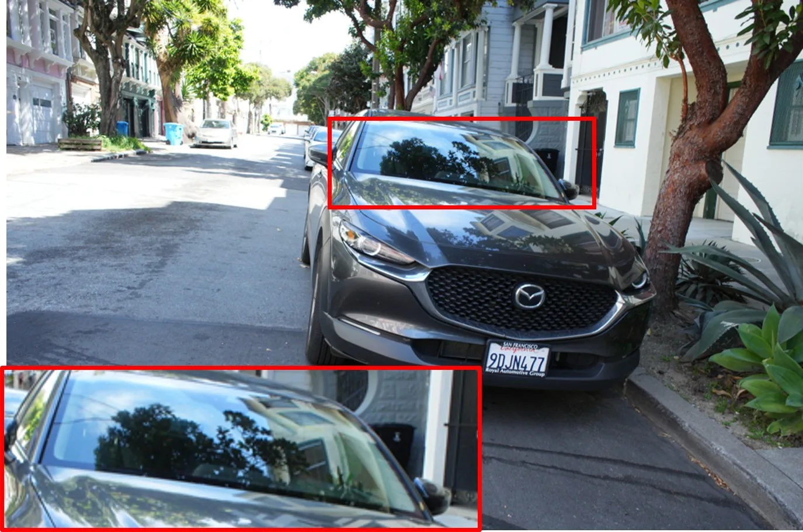
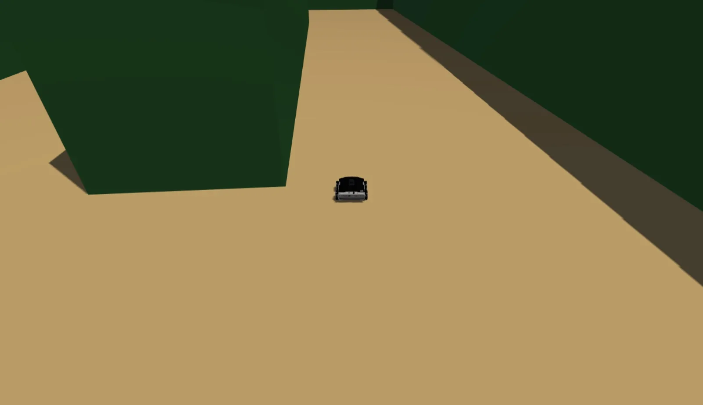
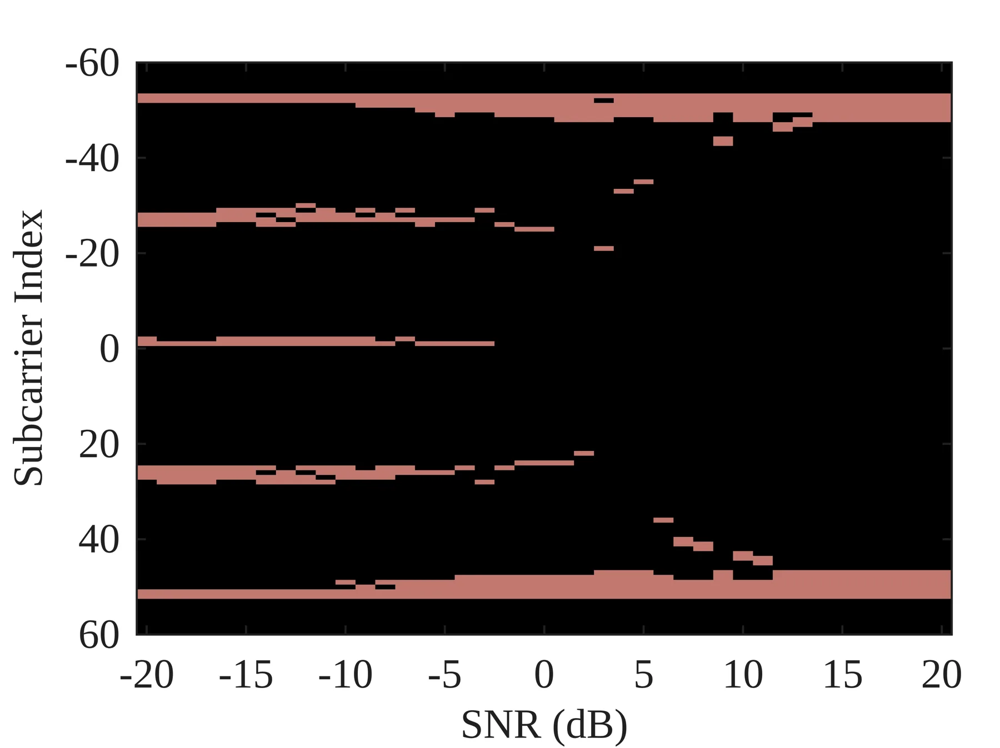

新论文 · 日期 2026-11-11 · score 17 · S层 · 3D/4D Spatial Perception · cs.CV
内容级别：完整单篇海报
作者：Kefei Qian, Xipeng Feng, Jie Li, Long Cao, Yuhan Chen, Xiangfei Huang, Guofa Li
评分 8.4/10
LiDAR 仿真3D 高斯溅射非刚性建模SMPL有界致密化可微光线追踪动态场景图
一句话工作总结：结论是“非刚性建模 + 有界预算”能在不增加基元数量的前提下同时改善几何与外观：Waymo Chamfer 0.0468 对 LiDAR-RT 的 0.0863（−45.7%），F-score@5cm 0.9682 对 0.9461；KITTI-360 Chamfer 0.0909 对 0.1367（−33.5%）。代价是渲染帧率略降（17.6 vs 20.1 FPS）。
论文提出 URL-Sim，一个面向动态驾驶场景的 LiDAR 仿真框架。它把场景拆成静态背景、刚性目标、SMPL 行人、无模板形变目标四类高斯表示，用可微 LiDAR 光线追踪渲染深度与强度，并把 3DGS 中无约束的致密化换成“全局预算 + 二次增长调度 + 多维重要性打分”的受控致密化（RGD）。在 Waymo 与 KITTI-360 各 4 段含非刚性目标的序列上，3M 高斯预算内 2D 深度/强度指标与 3…
Reconstructing high-fidelity LiDAR simulation scenes from real-world driving logs is essential for cost-effective safety validation of autonomous driving systems. While simulators based on Neural Radiance Fiel…

新论文 · 日期 2026-11-11 · score 11 · A层 · Robotic Foundation Models / VLA · cs.RO, cs.AI, cs.LG
内容级别：半海报
作者：Denis Grachev, Damien LaRocque, Omar Moured
评分 8.9/10
VLA检索基线记忆化诊断LIBERO-Plus表征质量离线指标
一句话工作总结：一句话：在 LIBERO 这种示范密集的基准上，一个不学策略的 kNN 就能拿到 91.7%，且抗扰动降幅最小；常用 VLA 的动作块也与训练示范高度接近（5/8 模型比留出真值更接近 kNN 预测）。
论文用一个完全不训练的策略回答“VLA 的基准分数有多少来自泛化”：把 1693 条 LIBERO 示范每 2 帧存一条（观测, 动作块）记忆，推理时按视觉/状态/语言/时间/历史距离检索近邻并加权复用动作块，在 LIBERO 上达到 91.7%、在 LIBERO-Plus 上 82.4%，后者是全部被评策略中降幅最小的（−9.3pt）。作者进一步用同一套检索去探测 9 个公开 VLA 的视觉语言骨干，发现微调多数…
Vision-language-action (VLA) models now exceed 95% success on the LIBERO simulation benchmark, yet it remains unclear how much of this performance requires generalization beyond the training demonstrations. In…

新论文 · 日期 2026-11-11 · score 10 · A层 · Robust State Estimation / Uncertainty · cs.RO, cs.AI
内容级别：半海报
作者：Pedro Antonio Alarcon Granadeno, Jane Cleland-Huang
评分 8/10
碰撞避免状态不确定性安全边距有向包围盒执行器约束分布外鲁棒性
一句话工作总结：结论：把“估计协方差 + 执行器极限”映射成方向性安全边距，比把它们作为特征喂给策略更抗分布漂移；代价是高不确定性下失败从碰撞转为超时。
论文提出动态有向包围盒（DOBB）：给定状态估计、其协方差和智能体的执行器响应参数，在线构造三层嵌套的有向矩形——占据层、一步投影层、刹车预留层，并把两两交互编码为四向面间隙、SAT 有符号间隔与归一化侵占面积。策略观测与奖励都建立在这套几何上，使“不确定性该让安全距离变大多少”由几何直接给出。在 4 个训练保真度环境与 500 个十智能体场景上，DOBB 平均总失败率 2.6%，且在执行器分布外与σ_p=0.5…
Learning-based decentralized collision avoidance must remain reliable under state-estimation uncertainty and heterogeneous agent dynamics. Existing methods typically address these factors through training-doma…

新论文 · 日期 2026-11-11 · score 7 · A层 · Robotic Foundation Models / VLA · cs.RO
内容级别：半海报
作者：Delin Zhao, Zhengrong Yue, Junlin He, Yali Wang
评分 7.6/10
具身智能体自我改进课程演化harness 修订LIBERO-PRO冻结基础模型
一句话工作总结：一句话：不训练任何权重，仅靠“课程 + 执行”两套可修订软件交替演化，就能把 LIBERO-PRO 从 59% 推到 74%；但这是单条开发轨迹的累计结果，无法归因到某个模块。
论文把机器人自我改进拆成两个可修订的 harness：课程侧根据能力档案挑选/构造练习条件，执行侧用可复用的提示、技能与工具修订来应对这些条件，两侧交替更新、彼此固定一侧作为对照。所有基础模型权重冻结，只改软件层。在 LIBERO 生态四个各 200 条件的评测面板上，最终部署相对初始版本提升 35.5 / 30.0 / 15.0 / 11.0 个百分点，LIBERO-PRO 达到 74.0%，比直接用同一个 π0…
Robot agents can improve reusable skills, planning procedures, and recovery strategies from execution feedback, yet a fixed practice source leaves the search for new weaknesses unchanged. Useful practice depen…

新论文 · 日期 2026-11-11 · score 6 · A-层 · Real-time / GPU Robotics Systems · cs.RO, cs.GR, cs.SY, eess.SY
内容级别：简报式摘要
作者：Santosh Mohan Rajkumar, Debdipta Goswami, Stephanie Stockar
评分 6.5/10
GPU 求解器模型预测控制CUDA graph实时优化
一句话工作总结：要点：把“每步重建算子 + 多次 kernel launch”的开销换成缓存算子与图回放；只作简报，不生成详情页。
论文提出 FAME-QP，一个面向线性 MPC 稠密二次规划的 GPU 求解器。它把约束相关的算子表示与单/双 kernel 迭代融合，用 CUDA graph 回放整条迭代链，并通过设备校准与问题特定计时自动选择执行配置；同时缓存算子库以挑选初始惩罚，矩阵变化时惰性更新算子。在人形与四旋翼控制实验中，相对同类 GPU 求解器降低了延迟并保持解的精度。
We present FAME-QP, a GPU-accelerated solver for dense quadratic programs arising in linear model predictive control. FAME-QP combines constraint-dependent operator representations with fused single- and two-k…

新论文 · 日期 2026-11-11 · score 10 · B层 · Neural Rendering / 3DGS / NeRF · cs.CV, cs.AI, cs.GR
内容级别：简报式摘要
作者：Gayoung Lee, Junho Kim, Jin-Hwa Kim, Junmo Kim
评分 6.8/10
3D 高斯溅射反射分离BRDF几何先验
一句话工作总结：要点：用“同一几何、两条渲染路径”把外观歧义从几何学习里剥离；方法简单，可与现有 3DGS 管线组合。
论文针对反射物体外观与几何纠缠的问题，提出双分支高斯框架：一个分支走 BRDF 渲染，另一个分支用合成“黏土图”监督同一套高斯几何，提供无反射的几何引导。合成与真实数据上几何与光度指标均有一致提升。
Understanding reflection remains a long-standing challenge in 3D reconstruction due to the entanglement of appearance and geometry under view-dependent reflections. In this work, we present the Pygmalion Effec…
新论文 · 日期 2026-11-11 · score 9 · B层 · Neural Rendering / 3DGS / NeRF · cs.GR
内容级别：简报式摘要
作者：Zhiwei Zhao, Yin Zhao, Minchen Li, Yixin Hu
评分 6.2/10
3D 高斯溅射流体仿真可微物理单目视频
一句话工作总结：要点：把“重建”换成“辨识仿真参数”，因此结果可外推；代价是只适用于可用流体模型描述的现象。
论文不再用逐帧形变场拟合像素，而是优化一个流体仿真器的参数来复现单目视频中的动力学：先用生成式 3DGS 补出初始流体几何（含未观测表面），从表面运动估计带物理约束修正的速度场并转成无散度网格表示，再用可微 APIC 仿真优化黏度、边界条件与流入/流出速度。输出资产天然可编辑、可交互、可时间外推。
Existing methods for dynamic 3D scene synthesis from video rely on per-frame deformation fields optimized through pixel-level reconstruction losses. While effective for closed systems such as elastic solids, t…

新论文 · 日期 2026-11-11 · score 9 · B-层 · Traditional LiDAR/Visual SLAM · cs.RO, cs.SY, eess.SY
内容级别：简报式摘要
作者：Alvaro J. Gaona, Lucas G\'omez-Velayos, Peter Pasuy-Quevedo
评分 6.4/10
EKF-SLAM线特征控制屏障函数ROS 2NMPC
一句话工作总结：要点：用“带不确定度的线特征”把定位、建图与控制串成可复现的 ROS 2 栈，工程完整性比算法新颖性更值得看。
论文给出一个 C++/ROS 2 的完整自主栈：每帧扫描用 RANSAC 与总体最小二乘提取墙面线并给出逐线不确定度，同一前端同时供已知地图 EKF 与在线建图 EKF-SLAM 使用；规划用膨胀栅格上的 A* 加视线捷径或前向 Hybrid A*，控制用 NMPC 加离散时间 CBF。仿真中机器人跑完 135 m 路线，已知地图定位 RMSE 1.0 cm、SLAM 模式 24 cm，规划 6 ms、NMPC 平…
Maze navigation requires localization from sparse, repetitive geometry, planning through narrow corridors, and control that stays safe when the estimate or the map is wrong. We present Maze Runner, an open aut…

新论文 · 日期 2026-11-11 · score 8 · C层 · 纯 GNSS/INS / PPP-AR · eess.SP, astro-ph.IM, cs.SY, eess.SY
内容级别：简报式摘要
作者：Samuel C. Morgan, Zacharias M. Komodromos, Wenkai Qin, Andrew Graff, Zachary L. Clements, W. Jeremy Morrison, Todd E. Humphreys
评分 5.8/10
LEO PNTStarlink伪距定位授时
一句话工作总结：要点：单靠公开星历的 Starlink opportunistic 定位达不到 GNSS 级精度，关键在运营方级别的轨道/钟产品。
论文从实采 Starlink Ku 波段下行信号提取到达时间观测，并配上“如同星座运营方原生提供”的高保真波束专用轨道与钟模型，模拟一个通信与 LEO PNT 融合的系统。在消费级接收硬件限制下，现场试验得到 95% 误差界：水平 2.33 m（半长轴）、垂直 3.37 m、授时 11.19 ns，实际解误差均落在界内。
We present experimental results from Starlink for pseudorange-based positioning, navigation, and timing (PNT), emulating a system that fuses a primary communications mission with a secondary low-Earth orbit (L…